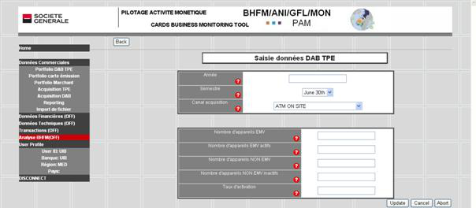

Tables des matières Fermer la fenêtre
o La fonction EDIT associée à chaque ligne permet d’afficher tous les champs pour en modifier le contenu.
o Pour atteindre les enregistrements suivants ou précédents, cliquez pour cela sur les boutons Suivant et Précédent situés au dessus de la table.
o Exemple de la mise à jour de la table portfolio DAB TPE :

o Une fois la modification réalisée, trois boutons sont disponibles :
Ø Update : confirme la mise à jour de l’enregistrement et retourne à l’affichage du tableau. Vérifier que la ligne a bien été modifiée.
Ø Cancel : annule votre modification et affiche l’enregistrement avec les valeurs originales.
Ø Abort : annule la mise à jour et revient à l’affichage du tableau de synthèse.